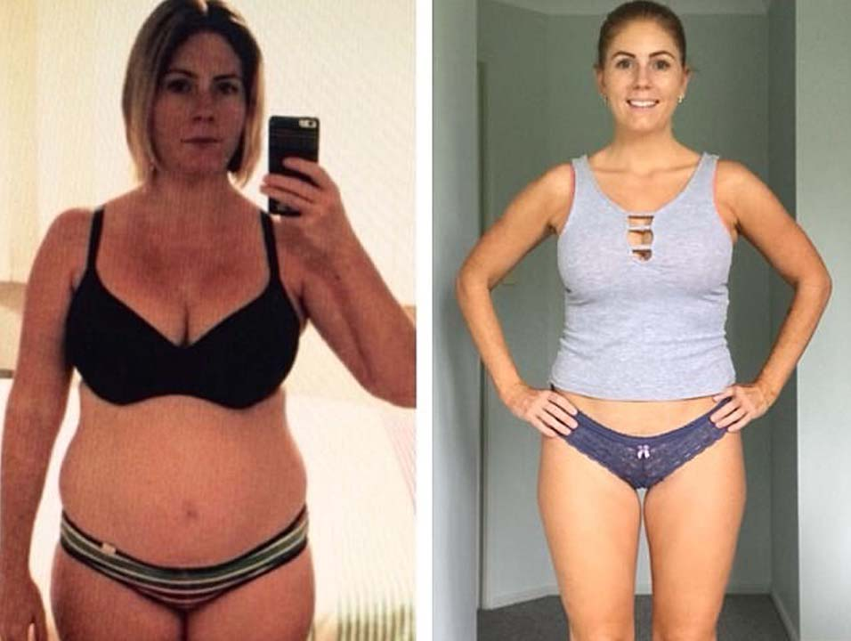

HISTORIA ODCHUDZANIA
Martyna Wojciechowska schudła 14 kg w ciągu zaledwie jednego miesiąca i opowiedziała jak to zrobiła w studiu podczas programu "Pytanie na śniadanie"!
Monika Zamachowska: Warszawa. Talk show "Pytanie na śniadanie". W tym studiu dyskutujemy na temat prawdziwych historii, o których nie możemy milczeć.
Przy swoim wzroście Martyna ważyła nieco ponad 75 kg, ale niespodziewanie dla wszystkich, dosłownie na naszych oczach zaczęła tracić na wadze.
Przez około miesiąc Martyna schudła prawie 14 kg! I wciąż milczy, dosłownie ukrywa swój sekretny sposób. Ale jak udało jej się to osiągnąć, aktorka i producent zgodziła się ujawnić sekret jej cudownego odchudzania tylko w studiu programy "Pytanie na śniadanie" i to jest główny temat naszego dzisiejszego programu!
Monika Zamachowska: Martyna, witamy, świetnie wyglądasz! Istnieją legendy o twoim cudownym sposobie na odchudzanie. Utrata 14 kg miesięcznie to naprawdę dużo. Jak sobie z tym poradziłaś?
Martyna Wojciechowska: Witam! Nigdy nie martwiłam się o swoją wagę, ale ostatnio nabrałam kilka kilogramów. Przez chwilę wydawało mi się, że nadwaga w moim wieku jest nonsensem. Ale to zaczęło posuwać się za daleko. Co więcej, uprawianie sportu jest bardzo trudne, a wraz z wiekiem pomaga coraz mniej, a dieta nie jest opcją ze względu na napięty harmonogram.

Monika Zamachowska:
Potwierdzam! Teraz wyglądasz po prostu niesamowicie! Czy to prawda, że można schudnąć 14 kg bez diety i wyczerpujących treningów?
Martyna Wojciechowska: Dziękuję za komplement. Naprawdę, straciłam na wadze bez żadnych diet, treningów i niebezpiecznych środków.
Właśnie tak odchudzanie wpływa na wygląd
Monika Zamachowska: Więc co to było, nowa dieta czy chirurgia plastyczna? Powiedz nam, co było dalej? Martyna, teraz jesteś inną osobą.
Martyna Wojciechowska: Siłownia była dla mnie zbyt trudnym zadaniem. Relacje z dietami też się nie sprawdziły, nigdy nie rozumiałam, jak ludzie mogą się w ten sposób torturować. Pół jabłka dziennie? Nie jestem Calineczką! Co pozostaje? Kiedy ręce zaczęły mi opadać, wsparła mnie przyjaciółka. Widząc, w jakim byłam stanie, poleciła spróbować innej opcji - czyli Choco Lite. Miałam wypijać jedną porcję z herbatą, sokiem lub z wodą 3 razy dziennie i nie myśleć o niczym, tylko czekać na wyniki. Myślałam, że tylko żartuje, że postanowiła mnie pocieszyć, ale nalegała i postanowiłam spróbować.
Monika Zamachowska: Co stało się później? Czy ten Choco Lite dał tak niesamowite efekty?
Martyna Wojciechowska: Tak, dokładnie Choco Lite, przyspiesza metabolizm i przemianę materii. Po tygodniu "eksperymentu" poczułam się naprawdę lepiej, w moim organizmie pojawiła się lekkość. Nie zmieniałam niczego w diecie, jadłam absolutnie te same produkty, ale straciłam na wadze. Wydawało mi się, że schudłam 1,5-2 kg, ale kiedy stanęłam na wagę, byłam oszołomiona - MINUS 3 kg! Jak tak? Taki efekt przy stosowaniu trzech dawek dziennie? Przestraszyłam się i przeczytałam skład na opakowaniu, a tam tylko naturalne składniki, i uspokoiłam się.
Po drugim tygodniu stosowania ponownie czekałam na cud. Człowiek szybko przyzwyczaja się do dobrego i czekałam na wynik w granicach 4 kg. SCHUDŁAM 6 kg! Prawie 1 kg dziennie, wyobrażacie sobie? Osobiście byłam tak zachwycona, że postanowiłam kontynuować. Wyniki trzeciego i czwartego tygodnia - odpowiednio minus 6 i 5 kg. Stosowałam Choco Lite miesiąc i schudłam 14 kg bez żadnego wysiłku, diety i treningu!
Monika Zamachowska: Brzmi niesamowicie! Wydaje mi się, że nawet wyglądasz młodziej, świetnie!
Martyna Wojciechowska: Dziękuję, teraz często to słyszę. Ważyłam ponad 75 kg, a teraz 61 kg, to ogromna różnica! Co ciekawe, minęło ponad 6 miesięcy, odkąd schudłam i już nie piję Choco Lite, a waga nie wraca. To naprawdę niezawodny wynik, chociaż trzymam kilka opakowań w domu na wypadek.
Monika Zamachowska: A w jaki sposób kupiłaś Choco Lite? Gdzie jest sprzedawany?
Martyna Wojciechowska: Jest sprzedawany zarówno w Polsce, jak i za granicą, szczególnie w Hiszpanii. Zamówiłam na oficjalnej stronie dystrybutora, którą radzę wszystkim. Dostawa jest szybka, jakość jest gwarantowana i nie ma ryzyka, aby natknąć się na podróbkę, a co najważniejsze - nie ma żadnych płatności z góry. Tylko oficjalny dostawca nie wymaga przedpłaty.
Martyna Wojciechowska: Chcę dodać, że nie należy odkładać odchudzania, ponieważ sama nie zauważysz, jak za rok przybędzie kolejne dziesięć kilogramów i będzie już za późno, by coś z tym zrobić. Ponadto, kto spróbuje schudnąć z pomocą Choco Lite, publikujcie na stronie swoje opinie i zdjęcia z wynikami.
Monika Zamachowska: Warszawa. Talk show "Pytanie na śniadanie". W tym studiu dyskutujemy na temat prawdziwych historii, o których nie możemy milczeć.
Przy swoim wzroście Martyna ważyła nieco ponad 75 kg, ale niespodziewanie dla wszystkich, dosłownie na naszych oczach zaczęła tracić na wadze.
Przez około miesiąc Martyna schudła prawie 14 kg! I wciąż milczy, dosłownie ukrywa swój sekretny sposób. Ale jak udało jej się to osiągnąć, aktorka i producent zgodziła się ujawnić sekret jej cudownego odchudzania tylko w studiu programy "Pytanie na śniadanie" i to jest główny temat naszego dzisiejszego programu!
Monika Zamachowska: Martyna, witamy, świetnie wyglądasz! Istnieją legendy o twoim cudownym sposobie na odchudzanie. Utrata 14 kg miesięcznie to naprawdę dużo. Jak sobie z tym poradziłaś?
Martyna Wojciechowska: Witam! Nigdy nie martwiłam się o swoją wagę, ale ostatnio nabrałam kilka kilogramów. Przez chwilę wydawało mi się, że nadwaga w moim wieku jest nonsensem. Ale to zaczęło posuwać się za daleko. Co więcej, uprawianie sportu jest bardzo trudne, a wraz z wiekiem pomaga coraz mniej, a dieta nie jest opcją ze względu na napięty harmonogram.
Monika Zamachowska: Potwierdzam! Teraz wyglądasz po prostu niesamowicie! Czy to prawda, że można schudnąć 14 kg bez diety i wyczerpujących treningów?
Martyna Wojciechowska: Dziękuję za komplement. Naprawdę, straciłam na wadze bez żadnych diet, treningów i niebezpiecznych środków.
Monika Zamachowska: Więc co to było, nowa dieta czy chirurgia plastyczna? Powiedz nam, co było dalej? Martyna, teraz jesteś inną osobą.
Martyna Wojciechowska: Siłownia była dla mnie zbyt trudnym zadaniem. Relacje z dietami też się nie sprawdziły, nigdy nie rozumiałam, jak ludzie mogą się w ten sposób torturować. Pół jabłka dziennie? Nie jestem Calineczką! Co pozostaje? Kiedy ręce zaczęły mi opadać, wsparła mnie przyjaciółka. Widząc, w jakim byłam stanie, poleciła spróbować innej opcji - czyli Choco Lite. Miałam wypijać jedną porcję z herbatą, sokiem lub z wodą 3 razy dziennie i nie myśleć o niczym, tylko czekać na wyniki. Myślałam, że tylko żartuje, że postanowiła mnie pocieszyć, ale nalegała i postanowiłam spróbować.
Monika Zamachowska: Co stało się później? Czy ten Choco Lite dał tak niesamowite efekty?
Martyna Wojciechowska: Tak, dokładnie Choco Lite, przyspiesza metabolizm i przemianę materii. Po tygodniu "eksperymentu" poczułam się naprawdę lepiej, w moim organizmie pojawiła się lekkość. Nie zmieniałam niczego w diecie, jadłam absolutnie te same produkty, ale straciłam na wadze. Wydawało mi się, że schudłam 1,5-2 kg, ale kiedy stanęłam na wagę, byłam oszołomiona - MINUS 3 kg! Jak tak? Taki efekt przy stosowaniu trzech dawek dziennie? Przestraszyłam się i przeczytałam skład na opakowaniu, a tam tylko naturalne składniki, i uspokoiłam się.
Po drugim tygodniu stosowania ponownie czekałam na cud. Człowiek szybko przyzwyczaja się do dobrego i czekałam na wynik w granicach 4 kg. SCHUDŁAM 6 kg! Prawie 1 kg dziennie, wyobrażacie sobie? Osobiście byłam tak zachwycona, że postanowiłam kontynuować. Wyniki trzeciego i czwartego tygodnia - odpowiednio minus 6 i 5 kg. Stosowałam Choco Lite miesiąc i schudłam 14 kg bez żadnego wysiłku, diety i treningu!
Monika Zamachowska: Brzmi niesamowicie! Wydaje mi się, że nawet wyglądasz młodziej, świetnie!
Martyna Wojciechowska: Dziękuję, teraz często to słyszę. Ważyłam ponad 75 kg, a teraz 61 kg, to ogromna różnica! Co ciekawe, minęło ponad 6 miesięcy, odkąd schudłam i już nie piję Choco Lite, a waga nie wraca. To naprawdę niezawodny wynik, chociaż trzymam kilka opakowań w domu na wypadek.
Monika Zamachowska: A w jaki sposób kupiłaś Choco Lite? Gdzie jest sprzedawany?
Martyna Wojciechowska: Jest sprzedawany zarówno w Polsce, jak i za granicą, szczególnie w Hiszpanii. Zamówiłam na oficjalnej stronie dystrybutora, którą radzę wszystkim. Dostawa jest szybka, jakość jest gwarantowana i nie ma ryzyka, aby natknąć się na podróbkę, a co najważniejsze - nie ma żadnych płatności z góry. Tylko oficjalny dostawca nie wymaga przedpłaty.
Martyna Wojciechowska: Chcę dodać, że nie należy odkładać odchudzania, ponieważ sama nie zauważysz, jak za rok przybędzie kolejne dziesięć kilogramów i będzie już za późno, by coś z tym zrobić. Ponadto, kto spróbuje schudnąć z pomocą Choco Lite, publikujcie na stronie swoje opinie i zdjęcia z wynikami.
Uwaga!
Jest więcej przypadków sprzedaży podróbek suplementu Choco Lite, które nie mają odchudzających właściwości! Dlatego dla naszych widzów i czytelników zamieszczamy link na oficjalną stronę dystrybutora, gdzie można zamówić Choco Lite. Tylko w tym przypadku masz gwarancję otrzymania produktu wysokiej jakości w najlepszej cenie!
Teraz w Polsce jest promocja "Choco Lite za 129 zł"
Promocja w Polsce obowiązuje w dniach od do
roku włącznie! Aby złożyć zamówienie, wystarczy podać swoje imię i nazwisko oraz numer telefonu do kontaktu na oficjalnej stronie produktu Choco Lite i poczekać na bezpłatną rozmowę w celu potwierdzenia zamówienia.
Uwaga! Na terenie Polski podczas całego programu Choco Lite będzie sprzedawany po cenie 129 zł, z opłatą tylko przy odbiorze! Bądź ostrożny!
Do końca programu na terenie Polski pozostaje:
Byłam zaskoczona, że piszecie, że tylko dietetycy wiedzą o Choco Lite. Piję go regularnie. Początkowo pomógł mi stracić więcej niż 20 kg. A teraz tylko w celu profilaktycznym, no i dla witamin, jest to całkowicie naturalny preparat. Moje przyjaciółki, nawiasem mówiąc, również o nim wiedzą od dawna, więc to nie jest tylko wasz sekret). ZDJĘCIE PRZED I PO.
Dla mnie Choco Lite stał się prawdziwym zbawieniem. Kilka lat temu miałam wypadek, po którym nie mogłam się ruszyć przez 8 miesięcy. Leżąc nabrałam 26 kg! Stopniowo zaczęłam chodzić z kijkiem, ale nie było mowy o żadnym wysiłku fizycznym, ponieważ byłam jeszcze słaba, a nadwaga obciąża całą sytuację. Pierwszy raz, gdy koleżanka dała mi te kapsułki do wypróbowania, ona właśnie wróciła ze Stanów Zjednoczonych, tam to wypróbowała i zabrała jak najwięcej ze sobą. Dała mi 2 paczki. Oczywiście, nie liczyłam na nic, po prostu postanowiłam spróbować. Piłam to 3 razy dziennie. Pierwsze zmiany zauważyłam tydzień później i nie chodzi o to, że straciłam dużo na wadze, czułam, że organizm jakoś zaczął działać szybciej, trawić pokarm itd. Fizycznie czułam, jak przyspiesza się metabolizm. Przez pierwsze 2 tygodnie straciłam 4 kg, nie zmieniając niczego w moim trybie! Pozostałe 26 kg zeszły po około 3 miesiącach. Ktoś powie, że 3 miesiące to bardzo długo, spróbuj zrzucić coś, chodząc na ten że fitness! Bardzo się cieszę, myślę, że po prostu miałam szczęście, że znajoma dowiedziała się o Choco Lite, inaczej nie wiem co by ze mną było, wciąż ważyłabym 89 kg.
Zaczęłam pić, jadłam wszystko, co lubię, i straciłam 9 kg. Wierzę, że Choco Lite dla utraty wagi jest najlepszym z tego, co spotykałam, i najpiękniejszą rzeczą jest nie męczyć się na siłowni, nie ma na to czasu i pragnienia. Takie rozwiązanie dla ludzi takich jak ja jest po prostu idealne! Polecam! Oto moje wyniki. Dzięki za porady!
Na zdrowie! Jestem bardzo szczęśliwy z tego powodu, mam nadzieję, że zmieni to życie wielu osób!
Muszę spróbować i dam znać jak wyniki. W tym roku idę na studia. Chcę rozpocząć nowe życie z nową sylwetką. W szkole tolerowałam znęcanie się nade mną chłopcami, wszyscy uważali mnie za grubasa. Chcę stracić 10 kg i znaleźć porządnego faceta na uniwersytecie.
Złożyłam zamówienie na kurację .. Otrzymałam po 4 dniach. Zaczęłam próbować schudnąć. Później napisze o wynikach. Dziękuję!
Jestem już sama z Choco Lite 3 dzień i chcę powiedzieć, że wynik jest widoczny, czuję się lżejsza, cera jest doskonała, uczucie głodu nie jest odczuwalne w ogóle, waga wykazuje dobre wyniki. Radzę. W końcu osiągnę swój cel. Choco Lite jest naprawdę bardzo skuteczny!
Dzięki za poradę. Nie mogę pozbyć się swoich kilogramów. Komercyjne centrum diabetologii jest bardzo drogie, w klinice w ogóle nie mogą zaoferować niczego. A środki ludowe i dieta próbowałem wszystkiego - nic nie pomaga. Oczekuję teraz na dostawę!
Och, nie czułam się tak dobrze od trzech lat! Nie możeciesz sobie nawet wyobrazić, jakie to szczęście - po prostu wziąć i zjeść ciasto) Kuracja trwała tylko pół miesiąca.
A ciekawe, na mężczyzn również podziała? Chciałbym stracić te zbędne kilogramy przed ciepłym sezonem. Tylko nie rozumiem, czy muszę płacić z góry?
Oczywiście, zamów! Wielu już pomogło! Szczerze doradzam! A jak już prawidłowo zauważyłeś, nie musisz nic płacić z góry, tylko po otrzymaniu przesyłki osobiście w ręce na oddziale kurierskim lub kurierowi firmy spedycyjnej.
Trudno w to uwierzyć ... ale tak wielu ludzi mówi, że to działa, znaczy powinno zadziałać
Przeszłam na stronę, żeby przeczytać więcej o produkcie Choco Lite, i jest bardzo miła niespodzianka, cena 129 zł, prawdopodobnie na cześć sezonu odchudzającego, teraz przecież jest lato) nie mogłam się oprzeć i kupiłam w ogóle)))
Teraz rozumiem, dlaczego gwiazdy są tak chude, prawdopodobnie jedzą ten Choco Lite przez cały rok. Fajnie, że stworzyli ten produkt, i smaczne i zdrowe
Mam 47 lat, mam 92 kg. Próbowałam różnych diet, ale zawsze je rzucam. Trzy miesiące temu, po kolejnej diecie niskowęglowodanowej nie wytrzymałam. Po 3 tygodniach przytyłam o kolejne 7 kg! To koszmar. Spróbuję tego preparatu.
Próbuję schudnąć od dawna, w ubiegłym roku, przepisano mi sesje akupunktury, stawiano mi igły u podstawy kciuków - bez rezultatu. Muszę spróbować ten kompleks!
Jaką głupotą ludzie się zajmują, powiedz mi, jak może pomóc akupunktura? Dietetyk zeszłego roku polecił mi ten kompleks. Problemy z wagą zaczęły się od 39 życia, teraz mam 43 lata, ale waga jest prawie normalna. Zauważyłam też, że zaczęłam dużo lepiej spać, a bóle głowy, które ciągle mnie dręczyły, zniknęły. Zamówione, właśnie, z tej samej strony.
Ponownie powtarzam, że preparat Choco Lite należy zamawiać tylko na oficjalnej stronie internetowej. Uważaj, proszę, na podróbki.